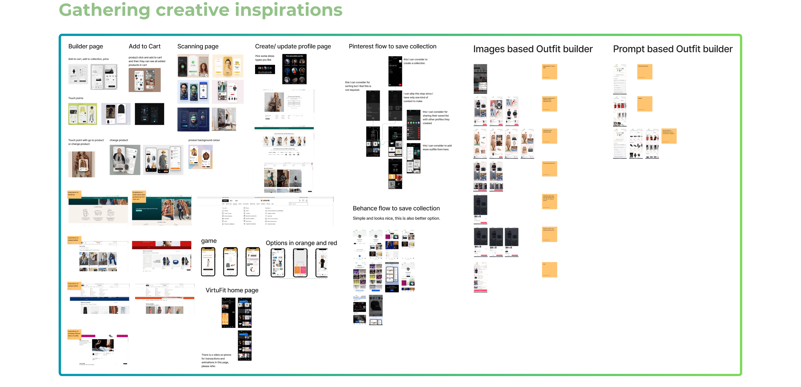
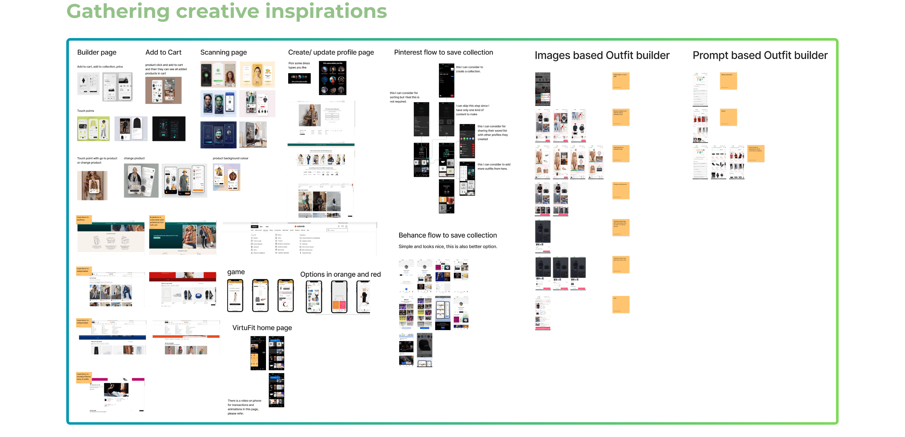
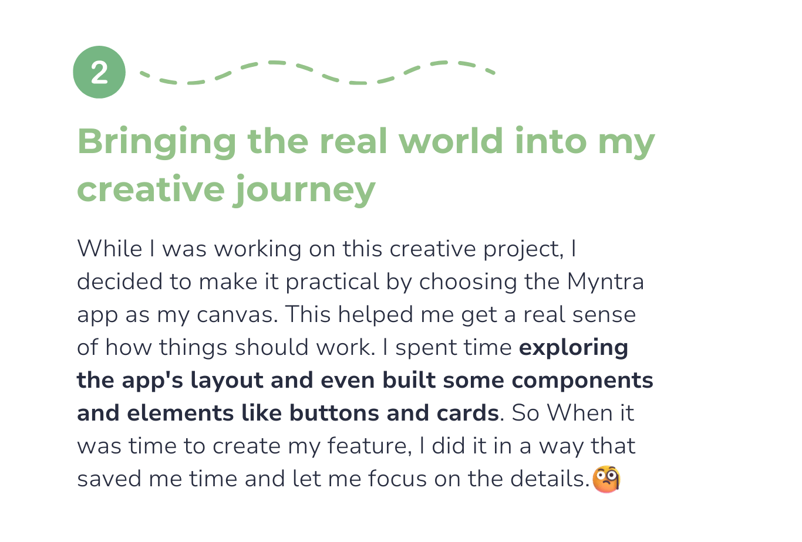
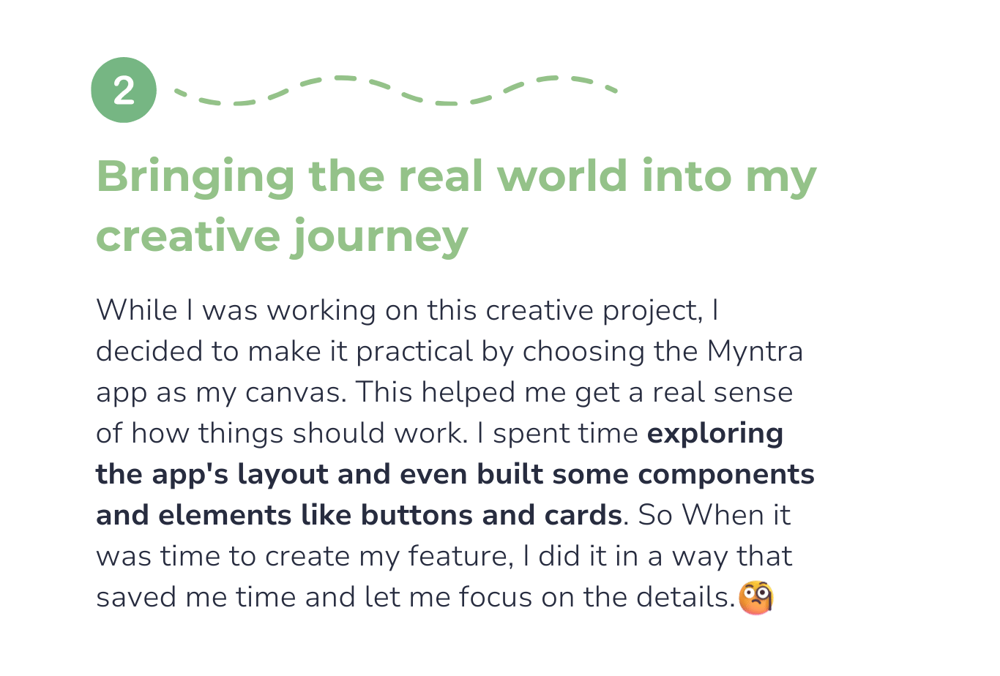
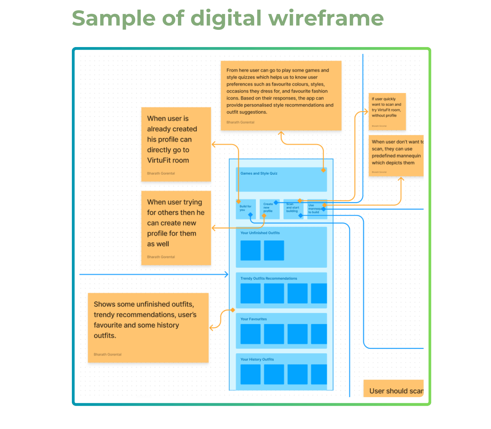
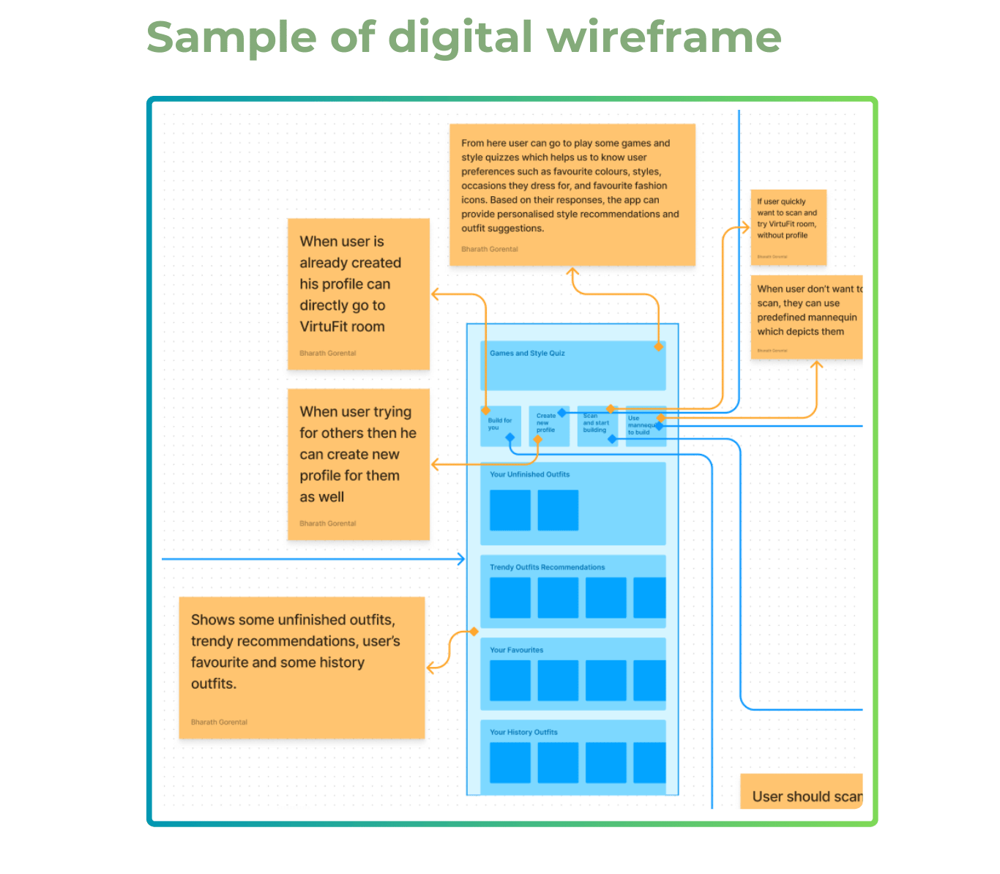
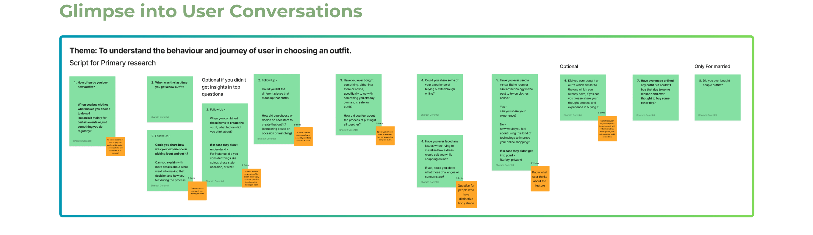
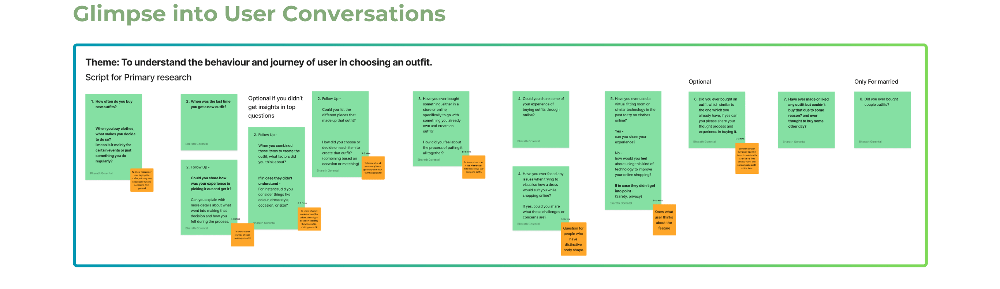
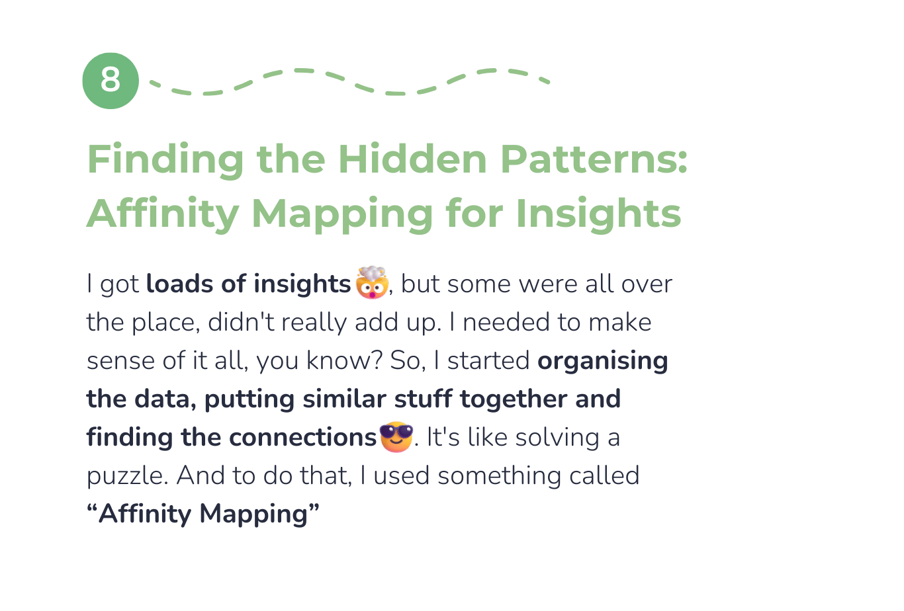
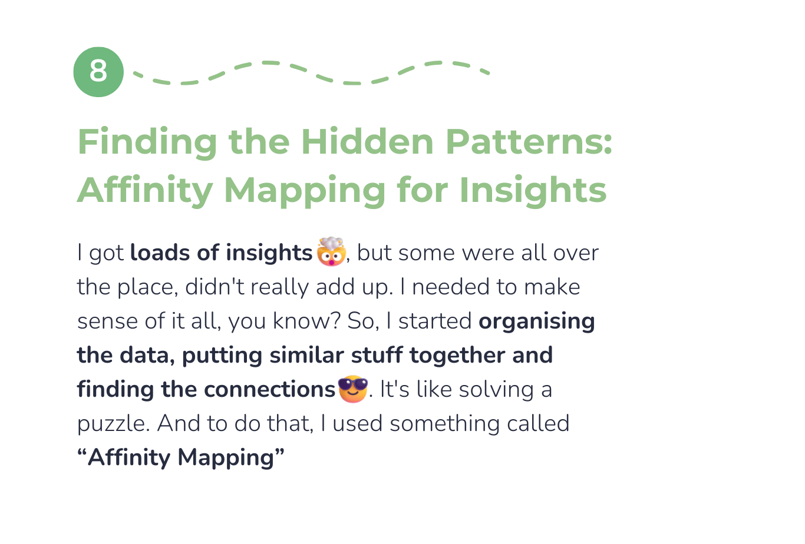

Start with Style: Personalize Your Outfit Journey
Let's dive into the 1st screen of VirtuFit. Users can select profiles they're shopping for, personalise recommendations and save outfits. It offers:
- Trendy collections and past outfits for style inspiration
- Occasion-based outfit choices for diverse needs
- A quick outfit search for swift selections.
This design was based on what I learned from my research, which highlighted that users have diverse shopping preferences and sometimes seek swift, hassle-free outfit selection.


Discover Outfits Your Way
In VirtuFit, the user has the freedom to experience their chosen outfit in three unique ways:
- Detailed View: Get an up-close and comprehensive look at the outfit.
- Quick Overview: Easily access essential information about the outfit.
- Immersive Try-On: Immersive Try-On: Experience the outfit as if you were trying it on in person.
 These outfit display options are designed to cater to user
preferences and needs.
These outfit display options are designed to cater to user
preferences and needs.
Users can explore how each option works in the videos provided below. Let's dive in!
Try On Outfits with "Wear"
Let's explore "Wear," the feature that lets users effortlessly try on outfits.
Using the phone's camera, users can scan themselves and virtually try on outfits. just like having a fitting room in their pocket. It enhances confidence in their fashion choices and ensures a perfect fit.
A Secure and User-Friendly Scanning Experience
Users can scan themselves to virtually try on outfits.
- Privacy Assurance: are provided with a privacy explanation prior to scanning to ensure their scans remain confidential. This builds trust and ensures user data is protected.
- User-Friendly Guidance: Helpful tips on lighting, positioning, and movement make scanning a smooth and confident experience.
This combination of privacy assurance and user-friendly guidance benefits both users and the business. Users can shop with confidence, and the business can provide a secure and enjoyable shopping experience, ultimately building trust and loyalty.
Your Mannequin, Your Style: Quick and Accessible Outfits for Everyone, Everywhere
For users who face constraints like limited time or privacy
concerns, the Mannequin option provides a quick way to visualize
outfits.
- Get a basic idea of how the outfit will look without a full body scan.
The idea of gathering User's details was Inspired by Myntra's 'Size Details' approach. Using this inspiration, I made some changes to the way we ask for user information to create a more streamlined and efficient mannequin-building process. By eliminating unnecessary steps
The aim was to make it easier for users to create a mannequin that
truly reflects their unique characteristics.
 It's all about empowering users with control over their virtual
fitting experience.
It's all about empowering users with control over their virtual
fitting experience.
 


 



 



 

 
